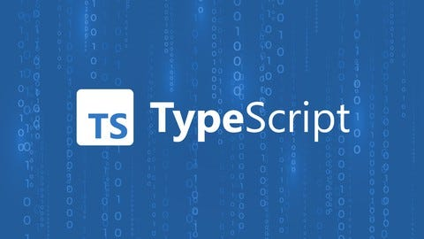

Posted: 10/10/2025
TypeScript adds a type system on top of JavaScript so you can catch mistakes before your code even runs. With static types, your editor can auto-complete smarter, refactor safer, and flag mismatches like passing a string where a number is expected. None of this changes how the browser executes your app—TypeScript compiles down to plain JavaScript—but it changes the developer experience dramatically, especially as a codebase grows.
The core building blocks are type annotations, interfaces, unions,
generics, and control-flow type narrowing. You can start small by
typing function parameters and return values, then graduate to
modeling domain objects with interfaces, using union types for clear
intent, and leveraging generics for reusable utilities. Configuration
lives in tsconfig.json, where options like
strict, noImplicitAny, and
target shape how rigorous the compiler is and what
JavaScript it emits.
Adoption works best incrementally. Turn on TypeScript, fix the
low-hanging errors, and chip away at any any types over
time. Keep types close to business logic so they stay accurate, and
avoid over-engineering: not every helper needs an ornate generic. The
payoff is fewer runtime surprises, clearer contracts between modules,
and confidence when refactoring—benefits that compound as your project
and team scale.